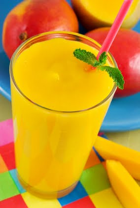

Ingredientes
- 3 Mangos bien maduros
- 1/2 taza de azúcar pulverizada
- 3 tazas de agua
- jugo de limón
Forma de preparación:
- Licuar la pulpa de los mangos y agregar poco a poco mientras se licua el agua, añadir el zúcar, limón y lo que queda de agua licuar bien otros minutos mas y servir con hielo
¡Y listo! ¡A disfrutar!